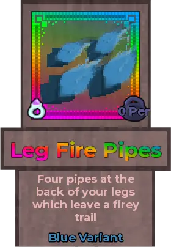
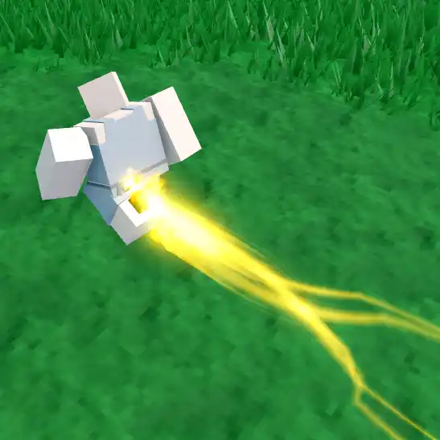

Leg Fire Pipes

Info
Slot: Accessory
Recolorable?: Yes
Unique Colors: None
Particle Effects: Yes
Sound Effects: None
Owner: None
Appearance & Effects
In-game description: Four pipes at the back of your legs which leave a fiery trail
The Leg Fire Pipes are four pipes attached to the back of the player's legs, consisting of a smaller pair and a larger pair. The pipes emit flame particle effects that leave a trail as the player walks around. The Leg Fire Pipes do not have any unique colors, but can be recolored.
Inspiration
The Leg Fire Pipes were inspired by Ingenium from the series My Hero Academia. Ingenium uses the fire jets on the back of his legs to move extremely fast.
Image Gallery
A close up of the blue Leg Fire Pipes
Colored orange

The trail left behind when colored orange
Colored green
The trail left behind when colored green